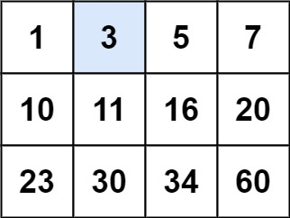
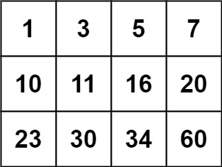

搜索二维矩阵
题目
编写一个高效的算法来判断 m x n 矩阵中，是否存在一个目标值。该矩阵具有如下特性：
- 每行中的整数从左到右按升序排列。
- 每行的第一个整数大于前一行的最后一个整数。
示例 1：

输入： matrix = [[1,3,5,7],[10,11,16,20],[23,30,34,60]], target = 3
输出： true
示例 2：

输入： matrix = [[1,3,5,7],[10,11,16,20],[23,30,34,60]], target = 13
输出： false
提示：
m == matrix.lengthn == matrix[i].length1 <= m, n <= 100-104 <= matrix[i][j], target <= 104
/**
* @param {number[][]} matrix
* @param {number} target
* @return {boolean}
*/
var searchMatrix = function(matrix, target) {
};参考答案
## 方法一：两次二分查找
思路
由于每行的第一个元素大于前一行的最后一个元素，且每行元素是升序的，所以每行的第一个元素大于前一行的第一个元素，因此矩阵第一列的元素是升序的。
我们可以对矩阵的第一列的元素二分查找，找到最后一个不大于目标值的元素，然后在该元素所在行中二分查找目标值是否存在。
代码
var searchMatrix = function(matrix, target) {
const rowIndex = binarySearchFirstColumn(matrix, target);
if (rowIndex < 0) {
return false;
}
return binarySearchRow(matrix[rowIndex], target);
};
const binarySearchFirstColumn = (matrix, target) => {
let low = -1, high = matrix.length - 1;
while (low < high) {
const mid = Math.floor((high - low + 1) / 2) + low;
if (matrix[mid][0] <= target) {
low = mid;
} else {
high = mid - 1;
}
}
return low;
}
const binarySearchRow = (row, target) => {
let low = 0, high = row.length - 1;
while (low <= high) {
const mid = Math.floor((high - low) / 2) + low;
if (row[mid] == target) {
return true;
} else if (row[mid] > target) {
high = mid - 1;
} else {
low = mid + 1;
}
}
return false;
}复杂度分析
- 时间复杂度：O(log m + log n)=O(log mn)，其中 m 和 n 分别是矩阵的行数和列数。
- 空间复杂度：O(1)。
方法二：一次二分查找
思路
若将矩阵每一行拼接在上一行的末尾，则会得到一个升序数组，我们可以在该数组上二分找到目标元素。
代码实现时，可以二分升序数组的下标，将其映射到原矩阵的行和列上。
代码
var searchMatrix = function(matrix, target) {
const m = matrix.length, n = matrix[0].length;
let low = 0, high = m * n - 1;
while (low <= high) {
const mid = Math.floor((high - low) / 2) + low;
const x = matrix[Math.floor(mid / n)][mid % n];
if (x < target) {
low = mid + 1;
} else if (x > target) {
high = mid - 1;
} else {
return true;
}
}
return false;
};复杂度分析
- 时间复杂度：O(log mn)，其中 m 和 n 分别是矩阵的行数和列数。
- 空间复杂度：O(1)。
结语
两种方法殊途同归，都利用了二分查找，在二维矩阵上寻找目标值。值得注意的是，若二维数组中的一维数组的元素个数不一，方法二将会失效，而方法一则能正确处理。